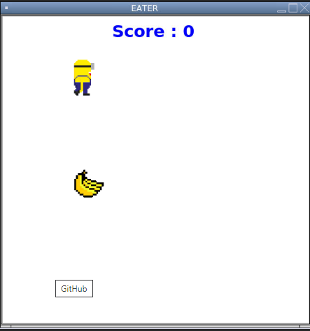
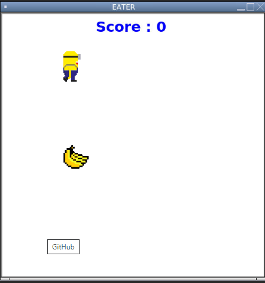

This is my Portfolio Page!

1.1.9 Project
This is our first project of the term that we have had in PLTW 1.1.9. Here we have an ocean containing a curious turtle who is wandering to find its way in the sea. We made the turtle wander randomly. In the ocean we have created multiple surroundings such as a shark, kelp, and an octupus. When you first run the code you are asked a question about the oldest turtle in the world.
If answered correctly, it will have one output whereas if answered incorrectly it will have a different output. We include multiple fun facts about the oldest turtle(Jonathan) that we thought were cool.

1.2.5 Project
This is our second project of the term that we have had in PLTW 1.2.5. We designed a game you control a minion around the game to eat bananas until the timer runs out. The goal of the game is for the score to hit 100 score(10 score per eat). Here we have a minion who we inserted using addshape and we creating the shape using a GIF. We also used a GIF to insert the banana in which the minion eats. We used a function for the movemenet of the turtle which moves using "WASD" keys.
SCRATCH Project #1
This is our first project of this new quarter that we created using scratch. This project was based off the game "dance dance revolution". We had a creative idea to create a dancing cometetion between two characters in which one you control to dance on beat. The goal of the game is to correctly press each arrow key on beat to try to beat the opponent in the dance battle. Each time you press the arrow correctly you gain points. If your accuracy is above 75% at the end of the game you win.
second day scratch project
Using App Inventor to make app game Duck Hunter.
Interactive Fiction Rags to Riches.
Black Jack game written in Python.
Modified bits in pictures.
Use data files to create graphs.
Using netlogo do remix of illusions.
Interactive Fiction Rags to Riches.
